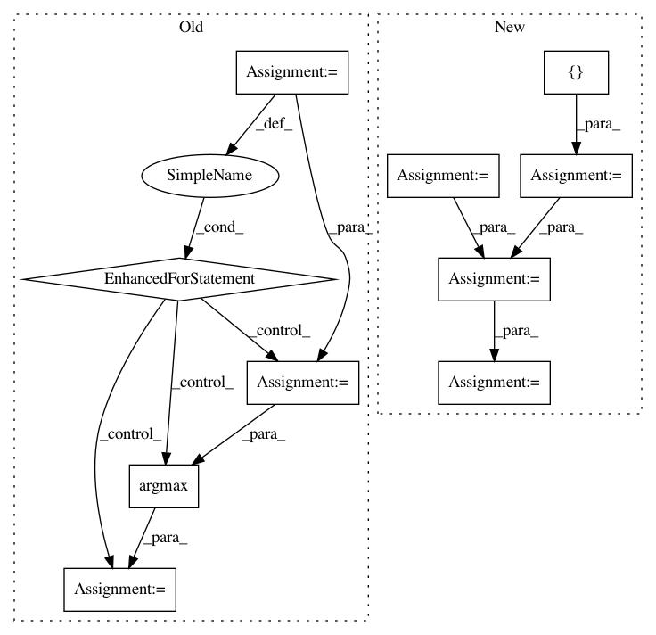

e81142f0869321cd8792e13bfc4f6fb85d9f1efc,libact/query_strategies/uncertainty_sampling.py,UncertaintySampling,make_query,#UncertaintySampling#,62
Before Change
// O(NK) + O(N)
prob = self.model.predict_real(X_pool)
min_margin = np.inf
for j in range(len(prob)):
m1_id = np.argmax(prob[j])
m2_id = np.argmax(np.delete(prob[j], m1_id))
margin = prob[j][m1_id] - prob[j][m2_id]
if margin < min_margin:
min_margin = margin
ask_id = j
else:
raise ValueError(
"Invalid method "%s" (available choices: ("lc", "sm", "le")"
% self.method
After Change
elif self.method == "sm": // smallest margin
dvalue = self.model.predict_real(X_pool)
if np.shape(dvalue)[1] == 2:
ind = [0, 1]
else:
// Find 2 largest decision values
ind = np.partition(-np.abs(dvalue), 2, axis=1)[:2]
margin = np.abs(np.abs(dvalue[:, ind[0]]) - np.abs(dvalue[:, ind[1]]))
ask_id = np.argmin(margin)
return unlabeled_entry_ids[ask_id]
def get_model(self):
In pattern: SUPERPATTERN
Frequency: 3
Non-data size: 10
Instances
Project Name: ntucllab/libact
Commit Name: e81142f0869321cd8792e13bfc4f6fb85d9f1efc
Time: 2015-12-22
Author: yangarbiter@gmail.com
File Name: libact/query_strategies/uncertainty_sampling.py
Class Name: UncertaintySampling
Method Name: make_query
Project Name: pytorch/fairseq
Commit Name: f305086031fc31a838d5b6c06eec35fd5cd16038
Time: 2019-03-19
Author: myleott@fb.com
File Name: scripts/score_moe.py
Class Name:
Method Name: intra_ref